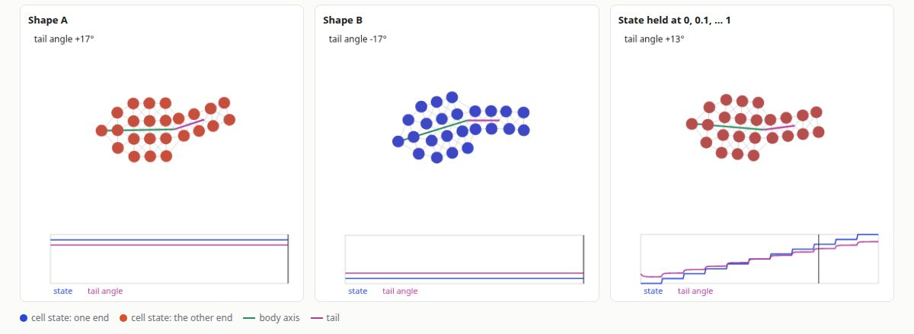
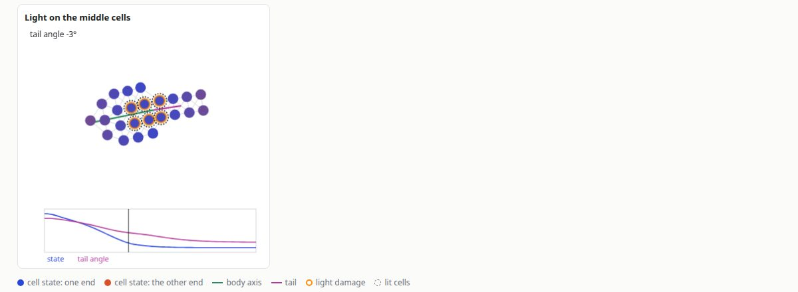
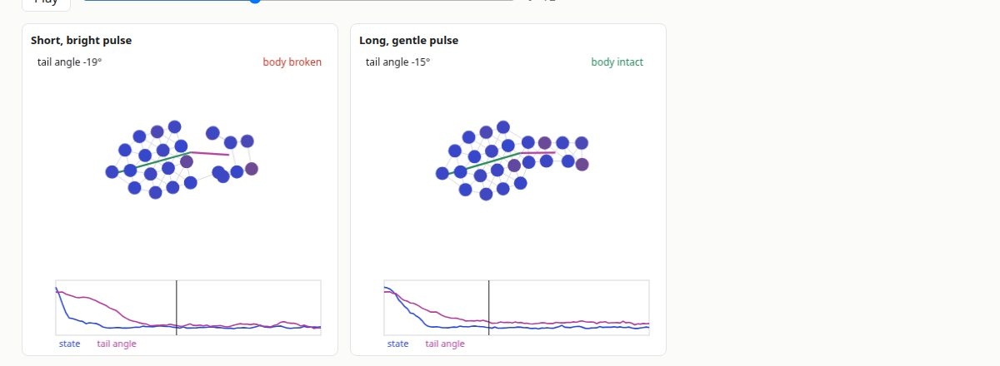
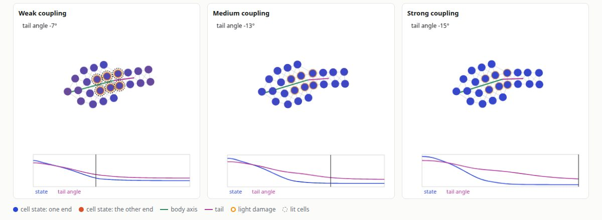

Cell clusters that remember
Small simulated clusters of cells that keep a body shape and can be switched between two states with light. Each page replays a pre-computed run.

Two shapes
The cluster settles into one of two stable shapes, with its tail bent to one side or the other.

Light switch
A short pulse of light on the middle cells flips the stored state, and the tail swings to the other side.

Strong vs gentle
Two pulses that both flip the state. The bright one tears the body apart; the gentle one doesn't.

Three dishes
Dishes differ in how strongly the body follows its state, so the same protocol plays out at different speeds.